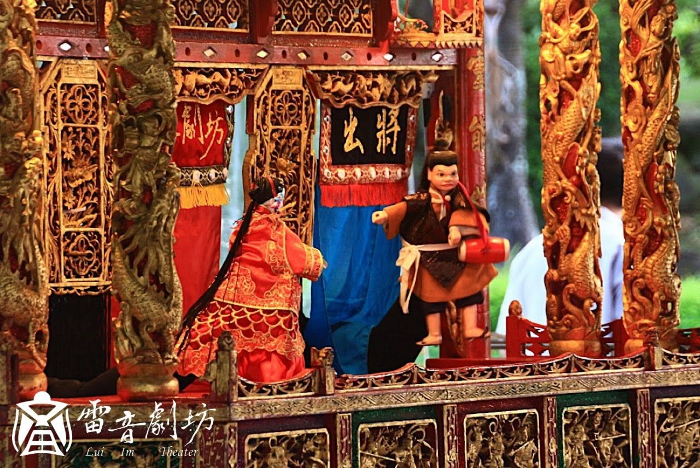
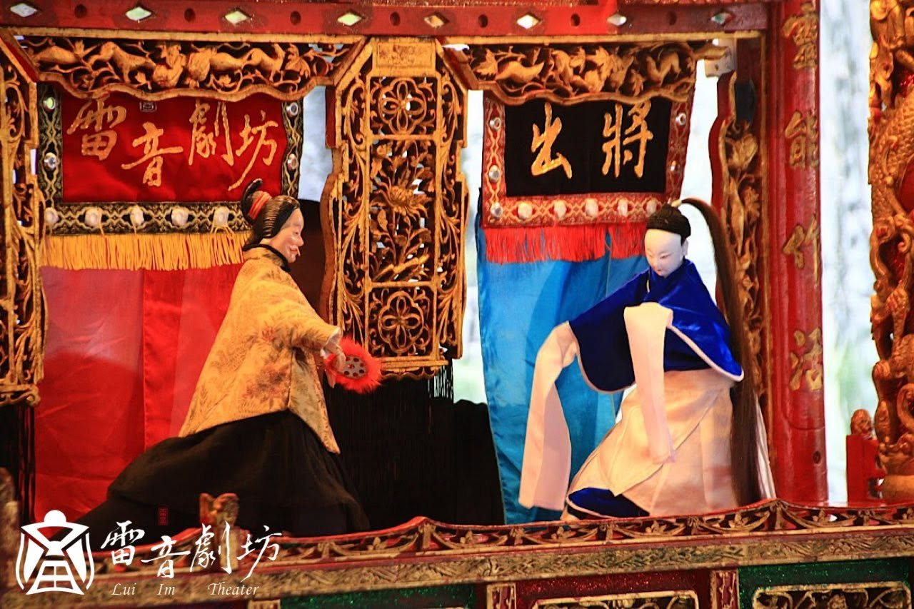

Prequel · 西北雨奇緣前傳
《鮕鮐兄點姻緣》
A Prequel to the Summer Rain Romance
About the work
作品介紹
鮕鮐兄因為老婆不擅縫補，前往阿鱔師家偷取天蠶寶衣，卻陰錯陽差誤偷成武館傳家大刀，隨後遭武館追殺。所幸逃至鯽仔魚家中躲過一劫，鮕鮐兄為報救命之恩，便將偷來的大刀贈予鯽仔魚。
欠缺盤纏上京赴考的鯽仔魚將大刀典當，不料因此遭武館追究、身陷牢獄，卻也意外牽起他與蘭花的一段姻緣。本作為《西北雨傳奇》的前傳作品。
Production stills
演出劇照
大稻埕戲苑演出劇照 · 攝影｜黃文謙

